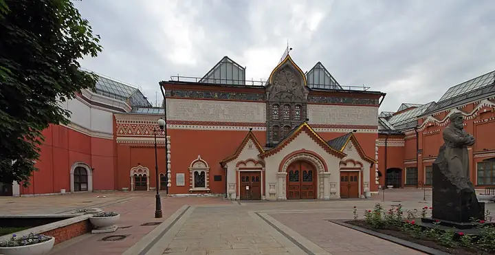

Подборку собрали 20 октября, прошедшие события скрыты. Свежая афиша — на главной

Фото: A.Savin, CC BY-SA 3.0 · Wikimedia Commons
Музей · ЦАО
Третьяковская галерея
Главное собрание русского искусства в Лаврушинском: от икон Рублёва до Шишкина и Врубеля.
- ₽₽ · 1 500–3 000 ₽ на человека
- в 1 плане
- 2 события в афише
Позвать сюда: Третьяковская галереяОткрыть в каталоге: Третьяковская галереяМаршрут до места: Третьяковская галерея
Адрес и детали
- Адрес
- Лаврушинский пер., 10
Открыть на Яндекс Картах (в новой вкладке) - Метро
- м. Полянка
- Округ
- Центр (ЦАО)
- Цена
- 1 500–3 000 ₽ на человека
- Часы работы
- вт–вс 10:00–21:00 · проверили в октябре 2026
- Телефон
- +7 (495) 957-07-27
- Проверено
- работает — проверили в октябре 2026
Планы с этим местом 1
- Третьяковская галерея · Музей · м. Полянка
- 4 минуты пешкомCream Soda · Кофейня
Русское искусство в Лаврушинском, а потом бранч в Cream Soda за углом.
Открыть план: Третьяковка и бранчПозвать сюда: Третьяковка и бранч
Фото: A.Savin, CC BY-SA 3.0 · Wikimedia Commons

Афиша площадки 2
Третьяковская галерея · м. Третьяковская · от 450 ₽ · 6+
Редкий шанс увидеть пастели Кипренского, Левитана, Серова и Врубеля — их почти не выставляют. По тому же билету — основная экспозиция; в понедельник закрыто.
Подробнее: Хрупкое искусство. Пастель из фондов графики XVIII — начала XX векаПозвать сюда: Хрупкое искусство. Пастель из фондов графики XVIII — начала XX векаБилеты : Хрупкое искусство. Пастель из фондов графики XVIII — начала XX века (страница с билетами, откроется в новой вкладке)
Фото: A.Savin, CC BY-SA 3.0 · Wikimedia Commons
Третьяковская галерея, Инженерный корпус · м. Третьяковская · от 650 ₽ · 16+
Лекция Третьяковки о стиле ампир: как Рим и Египет вдохновили архитектуру и живопись начала XIX века. После можно пройтись по залам галереи.
Подробнее: АмпирПозвать сюда: АмпирБилеты : Ампир (страница с билетами, откроется в новой вкладке)
Фото: A.Savin, CC BY-SA 3.0 · Wikimedia Commons
Похожие рядом


Что ещё рядом
Как позвать
- Выбери план, место или событие — в карточке адрес, цены и маршрут в Яндекс Картах.
- Нажми «Позвать сюда» — соберётся приглашение-игра для свидания или голосование для компании.
- Отправь ссылку в любой мессенджер: тебе ответят, а компания отметит, куда и когда может. Бесплатно и без регистрации.